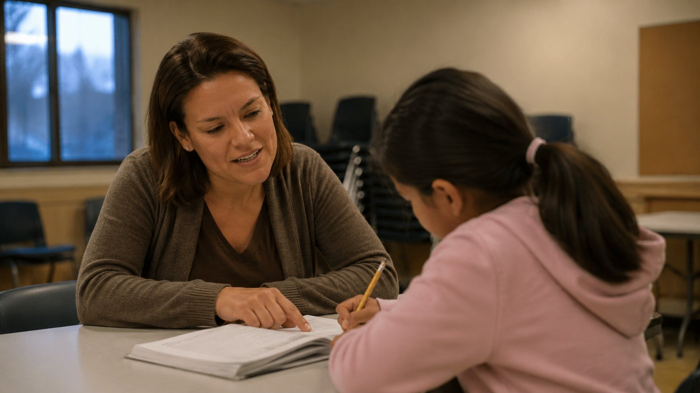
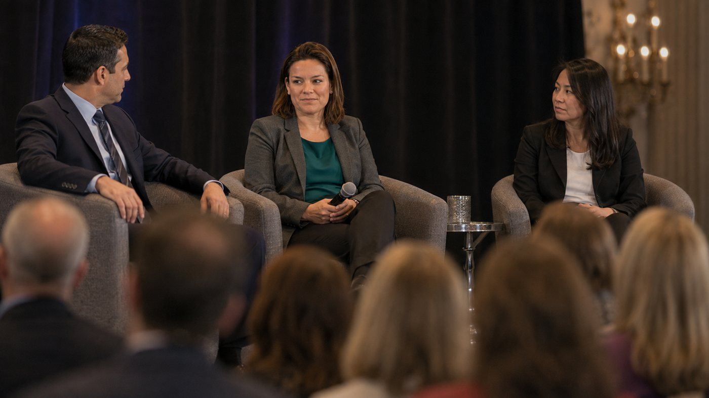

About
Gabriela Torres is Deputy Director, Transformation at Scale on the Postsecondary Success team at the Gates Foundation. She leads a team that works with partners across the country on a four-part discipline: understand what works, implement it, learn from what happens, then share it so the next institution does not start from nothing.
The premise underneath the strategy is not complicated. Postsecondary success is how economic and social mobility actually happens in this country. And it is not acceptable that some students, especially Black, Indigenous, Latinx and low-income students, meet specific and systemic barriers that keep them from the full value of the education they enrolled in.
Scale is the hard part. Anything can be made to work once, with enough attention on one campus. Making it hold across many, without the attention, is the problem she was hired to solve. She holds a BA in Hispanic Studies from Boston College and a master's in higher and postsecondary education from Arizona State University.
What it is forEducation treated as the mechanism it is. The measure is not enrolment. It is what a life looks like afterwards.
Named rather than implied. Barriers that fall specifically on Black, Indigenous, Latinx and low-income students, and that were built, which means they can be unbuilt.
Measured, repeatable, and portable. If it cannot be handed to the next institution, it has not worked yet.
Done with institutions and networks, not delivered to them. The people closest to the students hold the knowledge.
An honorary student affairs professional at heart.
Gabriela Torres, on her own leadership · Gates Foundation profile
Every role below is one she held before the current one. Read it in order. The national strategy at the top rests on the tutoring table at the bottom, and she is the one who says so.

Indiana Department of Education
Direct instruction with students whose schooling is interrupted by family movement for work. The tutoring table the national strategy still rests on.
Saint Xavier University
Multicultural and leadership programmes. Student affairs practised at the scale of one campus, one cohort, one student at a time.

NASPA
National student affairs body, representing a specific community of practice rather than speaking for the whole field.
Arizona State University
Supervising the live-in student staff who carry first-year students through the hardest transition in higher education, alongside a master's in higher and postsecondary education. Where practice met measurement.
OneGoal
Scaling support for students through and beyond enrolment. The first role where the problem was not the student in front of her but the thousand she could not sit with.
Gates Foundation
Postsecondary Success. Understand what works, implement it, learn from it, share it, so the next institution does not start from nothing.
Deputy Director, Transformation at Scale
No personal email address or telephone number for Gabriela Torres is published anywhere public, so none is invented here. Her official profile is the correct route, and it is the one a serious enquiry should use.
Official profile© 2026 Gabriela Torres. Biographical detail on this page is drawn from her official Gates Foundation profile. No statistics, awards, quotations or affiliations appear here that are not stated there. Photography is illustrative.